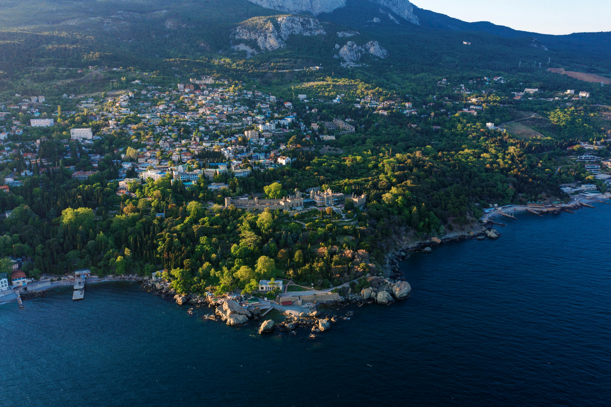
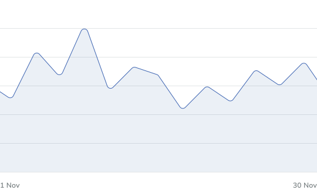
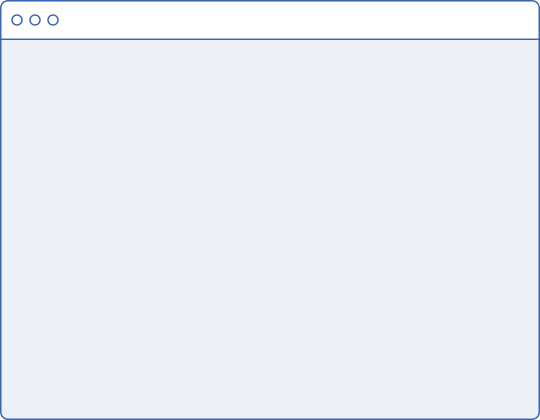

Ваш внесок у майбутнє починається тут!
Платформа ECOCONNECT об'єднує екологічні ініціативи, волонтерів та відповідальний бізнес для реалізації важливих проєктів та збереження довкілля.

Відкрийте для себе повний спектр можливостей
База даних проєктів
Легко знаходьте актуальні екологічні ініціативи у вашому регіоні або за тематикою, що вас цікавить.
Перевірені ініціативи
Ми ретельно перевіряємо кожен проєкт, щоб гарантувати прозорість намірів та ефективність використання ресурсів.
Прозоре звітування
Слідкуйте за прогресом підтриманих вами проєктів та спостерігайте за реальним впливом ваших внесків.
Пошук волонтерів
Знаходьте можливості долучитися до проєктів власними силами, знаннями та часом, станьте частиною змін.
Спільнота однодумців
Спілкуйтеся, діліться досвідом та об'єднуйте зусилля з іншими активістами, волонтерами та організаторами проєктів.
Бібліотека ресурсів
Доступ до корисних матеріалів, інструкцій, досліджень та найкращих практик для реалізації екологічних ініціатив.
Статистика нашої діяльності
Разом ми вже досягли значних результатів. Подивіться, як зростає кількість реалізованих проєктів, залучених волонтерів та позитивний ефект на довкілля завдяки нашій спільній діяльності.
Дізнатися ще
Функціонал платформи

Надаємо прості інструменти для планування, координації волонтерів та звітування вашої екологічної ініціативи.
Ефективні механізми для збору коштів від приватних донорів та пошуку підтримки від бізнес-партнерів.
Організовуйте команди, розподіляйте завдання та підтримуйте ефективну комунікацію з вашими помічниками.
Допомагаємо відстежувати та демонструвати реальні результати вашої діяльності для залучення нових прихильників.
Додаткові переваги
Партнерство з бізнесом
Допомагаємо компаніям знаходити надійні та ефективні еко-проєкти для реалізації програм корпоративної соціальної відповідальності.
Дізнатися більшеГлобальні та локальні ініціативи
Підтримуйте проєкти як у вашій громаді, так і ті, що мають значення для збереження природи в інших куточках світу.
Дізнатися більшеОсвітні ресурси та підтримка
Підвищуйте свою екологічну обізнаність та отримуйте консультації щодо започаткування та ведення власних проєктів.
Дізнатися більшеГотові долучитися до змін?
Робіть свій внесок у збереження планети для майбутніх поколінь. Приєднуйтесь до спільноти ECOCONNECT сьогодні та почніть діяти!
Приєднатися